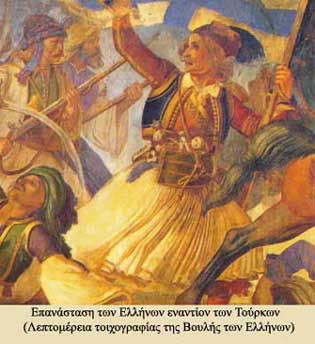

|
Η θέση-κλειδί των Σαλώνων, μεταξύ Ανατολικής και Δυτικής Στερεάς και απέναντι από την Πελοπόννησο, καθώς και το εξαιρετικά καλά οχυρωμένο κάστρο δικαιολογούν την επιλογή της πόλης ως αφετηρίας του Αγώνα στη Ρούμελη. Σημαντικό ρόλο στην προετοιμασία της επανάστασης έπαιξε ο Δεσπότης Σαλώνων Ησαΐας.
Στις 25 Μαρτίου δόθηκε το σύνθημα του ξεσηκωμού με πρωταγωνιστές το Διάκο, τον Πανουργιά, το Γιαγτζή, το Δυοβουνιώτη οι οποίοι δυο μέρες μετά κατέλαβαν την πόλη. Είναι η πρώτη πόλη της Στερεάς που απελευθερώνεται. Για την αποτελεσματικότερη οργάνωση του Αγώνα, από τον πρώτο ήδη χρόνο της επανάστασης, συγκλήθηκε στα Σάλωνα Συνέλευση, με συμμετοχή πληρεξουσίων της ευρύτερης περιοχής, η οποία ψήφισε τη «Νομική Διάταξη της Ανατολικής Χέρσου Ελλάδος» και αποφάσισε τη συγκρότηση τοπικής διοικητικής αρχής, τον ¶ρειο Πάγο, με πρόεδρο το Θεόδωρο Νέγρη και έδρα τα Σάλωνα. Η πόλη απελευθερώθηκε οριστικά στις 17 Νοεμβρίου1828.
Το χρονολόγιο της επαναστατικής δραστηριότητας στη Ρούμελη
|
|